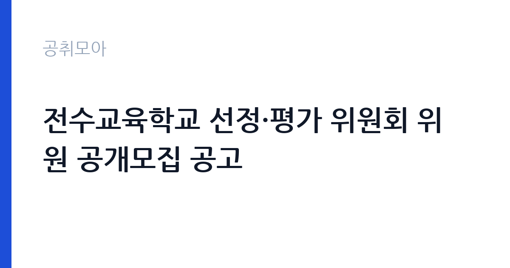

[국가기관] 전수교육학교 선정·평가 위원회 위원 공개모집 공고
국가유산청 · 전국 · 마감 2026-10-12 (D-10) · 출처 나라일터

한눈에 보는 모집 조건
| 기관 | 국가유산청 |
|---|---|
| 공고명 | 전수교육학교 선정·평가 위원회 위원 공개모집 공고 |
| 고용형태 | 정규직 |
| 근무지 | 전국 |
| 게시일 | 2026-10-02 |
| 마감일 | 2026-10-12 (D-10) |
지원자격, 이렇게 읽으세요
- 외부위원 7명
- 접수 ~2026-10-12 마감
- 세부 조건은 원문 공고문 확인
공고문의 응시자격은 짧게 쓰여 있지만 실제로는 세 가지를 봅니다. 첫째 결격사유 해당 여부, 둘째 자격·경력의 직무 연관성, 셋째 근무 시작 가능일입니다. 셋 중 하나라도 애매하면 원문 공고문의 세부 조항을 먼저 확인하고 지원서를 쓰세요. 특히 국가유산청 공고는 정규직 전형이라 서류에서 직무 연관 키워드(국가기관)를 명시하는 게 유리합니다.
이 공고의 포인트
이 공고의 관전 포인트는 ''입니다. 국가유산청이 내건 조건 가운데 '외부위원 7명' 대목이 서류의 분수령이 됩니다. 해당되면 주저 없이 지원하고, 애매하면 원문 공고문의 세부 조항을 먼저 대조해 보세요. D-10 일정상 오늘 내로 판단하는 게 좋습니다.
전형은 어떻게 진행되나
일반적인 순서는 서류심사 통과 후 면접심사입니다. 서류에서는 직무와 연결되는 경험이 있는지, 면접에서는 그 경험을 직접 설명할 수 있는지를 봅니다. 마감일(2026-10-12) 코앞에 몰리면 원서 접수 자체가 안 될 수 있으니 최소 하루 전에 제출하세요. 제출 뒤에는 접수번호·수험표가 정상 발급됐는지 확인이 필수입니다.
원문에서 확인한 전형 방식
전수교육학교 선정·평가 위원회 위원 공개모집 공고 국가유산청은 「전수교육학교의 선정 및 평가에 관한 규정」제7조에 의거하여 전수교육학교 선정·평가위원회 위원을 다음과 같이 공개모집하오니 많은 응모 바랍니다. 2026년 10월 2일 국가유산청장 1. 모집 개요 □ 모집인원: 7명 - 학계, 연구기관, 교육기관, 정부기관 등에 종사하며, 무형유산 또는 공교육과정에 대한 전문지식과 경험이 풍부한 사람 □ 위원임기: 위촉일(2026.10.)로부터 3년(2029.10.) ※ 1차에 한하여 연임 가능 2. 역할 및 기능 □ 심의/의결 사항 • 전수교육학교의 선정평가에 관한 사항 • 성과관리를 위한 연차평가, 종합평가에 관한 사항 • 전수교육학교 참여 학생의 대학원 연계 과정 이수 신청 시 국가유산청장의 승인 사항 • 기타 국가유산청장이 사업의 관리ㆍ평가에 관하여 필요하다고 인정하는 사항 □ 위원회 운영방식 • 회의 개회 및 심의를 위한 위원회 회의는 비공개를 원칙으로 함 • 재적위원 과반수 출석으로 개의하며, 출석위원 과반수의 찬성으로 의결함 • 안건의 내용이 경미하거나 필요 시 서면으로 심의할 수 있음 • 위원장은 위원 중 호선으로 선출 • 안건 의결 시 제척․기피․
위 내용은 국가유산청 원문 공고의 전형 항목을 그대로 옮긴 것입니다. 단계별 배수와 평가 요소가 적혀 있으니 본인 강점과 맞는 단계에 맞춰 준비 순서를 정하세요. 전형별 합격자 발표일도 원문에서 함께 확인하는 것이 좋습니다.
이런 분께 추천해요
- 전국 근무가 가능한 분 — 통근·거주 조건이 맞는지가 1순위입니다
- 정규직 전형을 찾는 분 — 국가기관 분야 관심자라면 우선 검토 대상입니다
- 마감(2026-10-12) 안에 서류를 낼 수 있는 분 — D-10이니 오늘 지원서 초안부터 잡으세요
지원 전 체크리스트
- 원문 공고문의 응시자격·결격사유 정독했는가
- 자격증·경력증명서 등 증빙 스캔 준비됐는가
- 마감일(2026-10-12) 전날까지 접수 가능한가
- 근무지(전국)·근무형태(정규직) 감당 가능한가
모집 일정과 제출 타이밍
이번 공고의 접수 기간은 2026-10-02부터 2026-10-12까지입니다. 남은 기간은 약 10일입니다. 서류 준비에 9일을 쓰고 마지막 하루는 접수·확인용으로 남겨두세요. 원서 접수는 시작일보다 마감일에 몰리는 구조라, 서버가 느려지는 마감 당일은 피하는 게 상책입니다. 권장 스케줄을 짜보면 첫째 날 공고문 정독과 지원자격 체크, 중간 날 자기소개서 작성과 증빙 준비, 마감 전날 접수 시스템 사전 입력입니다. 특히 국가유산청 채용은 마감 이후 추가 접수를 받지 않으니, 접수번호와 확인증 출력까지 마쳐야 비로소 지원 완료입니다.
직무 이해하기: 국가기관
국가기관 채용은 법령상 결격사유 심사가 엄격합니다. 병역, 정년, 겸직 금지 조항을 본인 상황에 대입해 먼저 점검하세요. 보안·신원조회가 필요한 직위는 합격 후에도 탈락 사유가 될 수 있어 사전에 결격 여부를 확인하는 것이 시간을 아끼는 길입니다. 국가유산청의 이번 채용(정규직)도 같은 잣대로 보면 됩니다. 공고 제목에 적힌 분야명과 직무기술서의 필요역량을 나란히 놓고, 본인 경험에서 겹치는 키워드를 세 개 이상 뽑아보세요. 그 세 개가 자기소개서와 면접 답변의 뼈대가 됩니다.
자기소개서 작성 팁
자기소개서에서 평가자가 찾는 건 직무와의 연결고리입니다. 서두에 지원 분야(국가기관)를 택한 이유를 한 문장으로 밝히고, 이어서 수치로 증명되는 경험 두 가지를 구체적으로 서술하세요. 마무리는 입사 후 1년의 실행 계획으로 닫습니다. 국가유산청 지원자가 자주 놓치는 감점 포인트는 분야와 동떨어진 성장 배경 나열, 근거 없는 역량 주장, 마감일(2026-10-12) 착오입니다. 정규직 모집은 빠른 실무 적응이 관건이라 출근 가능 시점을 분명히 적는 것이 플러스가 됩니다.
면접 준비 포인트
면접관의 질문은 두 갈래입니다. 서류 내용의 사실 관계 확인, 그리고 우리 조직에 맞을지에 대한 판단입니다. 자소서의 핵심 경험 두 개를 1분 안에 설명하는 연습을 해두고, 국가유산청의 대표 사업 하나를 지원 분야(국가기관)와 엮은 답변을 준비해 가세요. 마무리 질문에서는 근무지(전국)와 정규직 근무가 가능하다는 뜻을 간결하게 전하는 게 좋습니다. 단정한 복장, 30분 전 도착, 결론 우선 답변이 기본 수칙입니다.
급여·근무조건 읽는 법
급여표를 볼 때는 기본급과 실수령액을 구분해야 합니다. 공고문 수치는 대개 기본급이라 수당·상여가 빠진 금액입니다. 정규직 모집에서는 계약 기간과 갱신 조건, 4대 보험·퇴직금 적용이 핵심 체크 항목입니다. 국가유산청 원문의 보수 규정을 펼치고, 근무지(전국)가 외곽이거나 야간·주말 근무가 있다면 주거·교통 지원 조항까지 확인한 뒤 지원서를 내세요.
자주 묻는 질문
- 다른 분야와 중복 지원이 가능한가요?
공고문에 별도 금지 조항이 없으면 가능하지만, 국가유산청처럼 분야별 중복지원을 막는 기관이 많습니다. 원문 '지원 시 유의사항'을 먼저 확인하고, 가능하다면 가장 합격 가능성이 높은 한 분야에 집중하세요. - 우대사항에 해당되는지 어떻게 확인하나요?
이번 공고의 핵심 우대 조건은 '외부위원 7명'와 ''입니다. 증빙(자격증·경력증명서·취업지원대상자 증명서) 발급에 시간이 걸리니 마감일(2026-10-12) 기준 최소 3일 전에는 서류를 손에 쥐고 있어야 합니다. - 서류가 간소화되는 경우도 있나요?
청년인턴·기간제 등 일부 전형은 서류심사를 생략하고 면접만 보기도 합니다. 국가유산청 공고문의 전형절차 표를 확인하세요. 간소화 전형일수록 면접 준비에 시간을 몰아주는 게 유리합니다.
함께 보면 좋은 공고
[국가기관] 선봉대 체력단련장(육군골프장) 계절근로자(프론트담당) 채용공고 제 2026-12호 — 마감 2026-10-11[국가기관] 중앙선거여론조사심의위원회 분석·모니터링요원(기간제 근로자) 채용 공고 — 마감 2026-10-14[국가기관] 2026년도 제3회 양구우체국 상시계약집배원(계약직) 채용 공고 — 마감 2026-10-08출처: 나라일터 공개정보를 바탕으로 공취모아가 정리한 안내글입니다. 모집 조건·일정은 변경될 수 있으니 지원 전 반드시 원문 공고문을 확인하세요. 본 글은 정보 제공용이며 합격을 보장하지 않습니다.